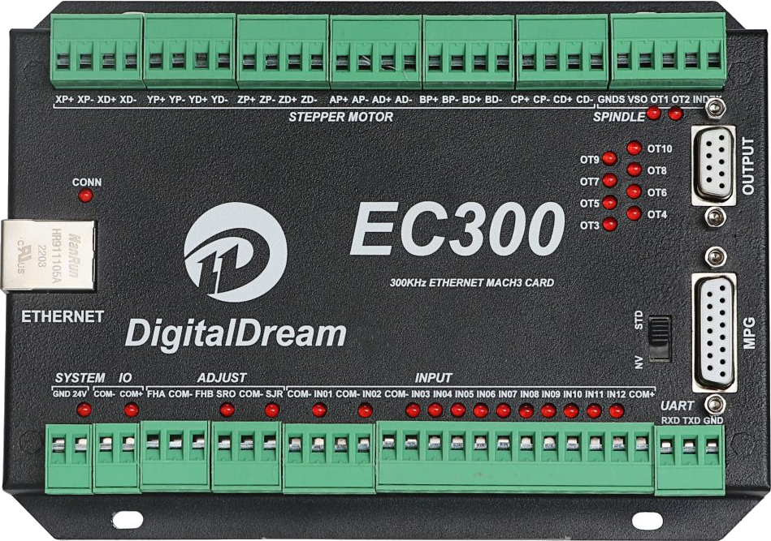

Digital Dream EC300
The Digital Dream EC300 is a 3 to 6 axis Ethernet CNC motion controller originally designed to be used with the Mach3 software. It is based on the NXP i.MX RT1052 crossover MCU (ARM Cortex-M7).

This port is intended to be the hardware base for running a CNC motion controller entirely on NuttX. The pin information used here was taken from the Remora-RT1052 firmware project (which runs on the EC300, EC500 and NVEM boards) and from the EC300 User Manual.
Features
- Processor
MIMXRT1052CVL5B, ARM Cortex-M7 at 528 MHz
512 KiB of OCRAM (FlexRAM, no external SDRAM)
- Memory
4 MiB Winbond W25Q32 Quad SPI NOR flash on FlexSPI (XIP boot)
- Connectivity
10/100 Ethernet, Microchip LAN8720A RMII PHY
MPG port (Digital Dream NVMPG pendant) on LPUART5
- Motion control I/O (all opto-isolated)
6 step/direction axis outputs (X, Y, Z, A, B, C)
12 general purpose digital inputs
10 general purpose digital outputs
0-10V (or PWM) spindle speed output
- Power
24 VDC main supply, separate 24 VDC IO supply
Supported peripherals
The initial port supports the serial console, the CONN LED and the Ethernet interface. Step generation, digital IO, spindle and MPG drivers will be added later.
Peripheral |
Support |
NOTES |
|---|---|---|
LPUART4 |
Yes |
Serial console |
ENET |
Yes |
LAN8720A PHY, RMII, 50 MHz from MCU |
GPIO |
Yes |
CONN LED |
LPUART5 |
No |
MPG port, pins already defined |
FlexPWM |
No |
Spindle PWM / step generation |
QDC/ENC |
No |
Encoder inputs |
Serial Console
The NuttX console is on LPUART4 at 115200 8N1:
Function |
Pad |
Signal |
|---|---|---|
LPUART4_TX |
GPIO_B1_00 |
LPUART4_TX |
LPUART4_RX |
GPIO_B1_01 |
LPUART4_RX |
The console is available with RS-232 levels on the bottom right connector of the EC300, labeled:
UART
RXD TXD GND
Connect it to an RS-232 serial port (or a USB to RS-232 adapter): the connector TXD goes to the PC RXD, the connector RXD goes to the PC TXD and GND to GND. Do not connect a 3.3V (TTL) USB-to-serial adapter directly to this connector.
Ethernet
The EC300 uses a LAN8720A RMII PHY. The i.MX RT generates the 50 MHz RMII
reference clock on ENET_REF_CLK and feeds it to the PHY. The PHY uses
MDIO address 0. It has no reset or interrupt line connected to the MCU.
Function |
Pad |
Signal |
|---|---|---|
ENET_RX_DATA0 |
GPIO_B1_04 |
ENET_RX_DATA00 |
ENET_RX_DATA1 |
GPIO_B1_05 |
ENET_RX_DATA01 |
ENET_RX_EN |
GPIO_B1_06 |
ENET_RX_EN |
ENET_TX_DATA0 |
GPIO_B1_07 |
ENET_TX_DATA00 |
ENET_TX_DATA1 |
GPIO_B1_08 |
ENET_TX_DATA01 |
ENET_TX_EN |
GPIO_B1_09 |
ENET_TX_EN |
ENET_REF_CLK |
GPIO_B1_10 |
ENET_REF_CLK |
ENET_RX_ER |
GPIO_B1_11 |
ENET_RX_ER |
ENET_MDC |
GPIO_B1_14 |
ENET_MDC |
ENET_MDIO |
GPIO_B1_15 |
ENET_MDIO |
The i.MX RT ENET driver hard-codes MDIO address 1 when
CONFIG_ETH0_PHY_LAN8720 is selected. So the board uses
CONFIG_ETH0_PHY_MULTI and supplies its own PHY description through
BOARD_ETH0_PHY_LIST in include/board.h.
The MAC address comes from the MCU unique ID fuses (OCOTP), so every board gets a different, stable MAC address.
The PHY interrupt output is not connected to the MCU either. The board
emulates it by polling (CONFIG_DDCNC_EC300_PHY_POLL_MSEC, 1 second by
default), so the PHY notification ioctl (SIOCMIINOTIFY) works and the
NETINIT link monitor (CONFIG_NETINIT_MONITOR) can detect link changes.
When the cable is plugged in after boot, or unplugged and plugged again, the
interface is brought up again and the PHY renegotiates the link speed.
LEDs
There are three LEDs on the front panel: POWER, IO and CONN. POWER and IO
are driven by hardware. CONN is connected to GPIO_SD_B1_00
(GPIO3_IO00) and is lit when the pin is low.
If CONFIG_ARCH_LEDS is enabled, NuttX uses the CONN LED to show its
status:
SYMBOL |
Meaning |
LED |
|---|---|---|
LED_STARTED |
NuttX has been started |
OFF |
LED_HEAPALLOCATE |
Heap has been allocated |
OFF |
LED_IRQSENABLED |
Interrupts enabled |
OFF |
LED_STACKCREATED |
Idle stack created |
ON |
LED_INIRQ |
In an interrupt |
N/C |
LED_SIGNAL |
In a signal handler |
N/C |
LED_ASSERTION |
An assertion failed |
N/C |
LED_PANIC |
The system has crashed |
FLASH |
If the LED is always on, NuttX has booted and is running normally. If it flashes at about 2 Hz, a fatal error was detected and the system has halted.
If CONFIG_ARCH_LEDS is not enabled, the CONN LED can be controlled by
applications with the USERLED driver.
Motion Control I/O
Remora uses the following MCU GPIOs for the EC300 machine I/O. No NuttX drivers use them yet; they are listed here for reference. All inputs are active low (opto-isolated).
Step generator outputs:
Axis |
Step |
Direction |
|---|---|---|
X |
GPIO1_22 |
GPIO1_17 |
Y |
GPIO1_24 |
GPIO1_31 |
Z |
GPIO1_18 |
GPIO1_25 |
A |
GPIO1_27 |
GPIO1_21 |
B |
GPIO1_16 |
GPIO1_23 |
C |
GPIO1_20 |
GPIO1_19 |
Digital inputs:
Input |
GPIO |
Input |
GPIO |
|---|---|---|---|
IN01 |
GPIO4_26 |
FHA |
GPIO3_26 |
IN02 |
GPIO4_27 |
FHB |
GPIO4_30 |
IN03 |
GPIO4_21 |
SRO |
GPIO3_19 |
IN04 |
GPIO4_24 |
SRJ |
GPIO4_20 |
IN05 |
GPIO4_28 |
INDEX |
GPIO3_22 |
IN06 |
GPIO4_25 |
WHA |
GPIO3_16 |
IN07 |
GPIO4_29 |
WHB |
GPIO3_17 |
IN08 |
GPIO4_23 |
CIN |
GPIO4_18 |
IN09 |
GPIO4_31 |
XIN |
GPIO4_17 |
IN10 |
GPIO3_18 |
YIN |
GPIO4_16 |
IN11 |
GPIO3_21 |
ZIN |
GPIO4_15 |
IN12 |
GPIO3_20 |
AIN |
GPIO4_14 |
Digital outputs OT01 to OT10 are on GPIO4_02, GPIO4_01, then
GPIO4_03 to GPIO4_10. The MPG handwheel inputs are X100IN
(GPIO4_13), X10IN (GPIO4_12) and EP (GPIO4_11).
Flashing
The EC300 boots from its QSPI NOR flash, a Winbond W25Q32 (JEDEC ID
0xef4016). The NuttX image includes the FlexSPI configuration block,
image vector table and boot data needed by the i.MX RT boot ROM, so the
image is flashed at the start of the flash (0x60000000). The
configurations generate a raw binary (nuttx.bin) for this.
The flash is programmed through the SWD port. OpenOCD has no flash driver
for the i.MX RT FlexSPI controller, so the board provides an OpenOCD
configuration that implements the QSPI NOR erase, program, verify and read
operations as Tcl commands:
boards/arm/imxrt/ddcnc-ec300/tools/ddcnc-ec300.cfg. It has been tested
with OpenOCD 0.12.0 and an ST-Link/V2 probe; other probes can be selected
by setting INTERFACE (e.g. -c "set INTERFACE cmsis-dap").
Warning
Flashing NuttX erases the original Mach3 firmware. Make a backup of the flash first, so it can be restored later.
Backup the whole 4 MiB flash:
$ openocd -f boards/arm/imxrt/ddcnc-ec300/tools/ddcnc-ec300.cfg \
-c "init; ec300_flash_dump ec300-original.bin; reset run; shutdown"
Program NuttX, verify it and reboot the board:
$ openocd -f boards/arm/imxrt/ddcnc-ec300/tools/ddcnc-ec300.cfg \
-c "init; ec300_program nuttx.bin; shutdown"
Restore the original firmware from the backup:
$ openocd -f boards/arm/imxrt/ddcnc-ec300/tools/ddcnc-ec300.cfg \
-c "init; ec300_program ec300-original.bin; shutdown"
Other commands provided by the configuration (run them after init):
Command |
Description |
|---|---|
|
Show the JEDEC ID and status registers |
|
Erase a range (4 KiB sectors) |
|
Erase the whole flash |
|
Program a raw binary file |
|
Compare the flash with a binary file |
|
Read the flash into a file |
Programming runs at about 7 KiB/s with an ST-Link/V2, so a NuttX image takes around 25 seconds.
Configurations
Each configuration is set up and built like this:
$ ./tools/configure.sh ddcnc-ec300:<subdir>
$ make
Where <subdir> is one of the following:
nsh
A basic NuttShell (NSH) configuration on the LPUART4 serial console.
netnsh
Same as nsh, plus Ethernet networking with TCP, UDP, ICMP (ping) and
the Telnet daemon. The network is initialized in a background thread that
keeps monitoring the link state, so the Ethernet cable can be connected
after the board has booted. The board uses a static IPv4 address that matches the
Remora / LinuxCNC defaults:
Setting |
Value |
|---|---|
IP address |
10.10.10.10 |
Netmask |
255.255.255.0 |
Gateway |
10.10.10.1 |
To test it, set the host’s Ethernet interface to an address in the
10.10.10.x network, then:
$ ping 10.10.10.10
$ telnet 10.10.10.10
On the board you can check the interface with:
nsh> ifconfig
nsh> ping 10.10.10.1